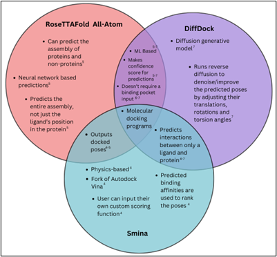

Over the summer, I was able to explore molecular docking and compare the accuracy of physics-based and machine learning-based molecular docking methods. Below you can find a brief description of the research in progress.
Molecular docking holds significant potential to transform drug development. However, the comparative effectiveness of machine learning based molecular docking methods versus traditional physics-based methods remains unclear. This study evaluates the accuracy of various molecular docking programs to determine whether machine learning based docking programs are comparable or superior to physics-based programs. The docking programs were tested using ligands and proteins from the Database of Useful Decoys: Enhanced (DUD-E). Specifically, the physics-based docking method Smina was compared to the machine learning based methods DiffDock and RoseTTAFold All-Atom. Accuracy was assessed using three metrics: the root mean squared deviation (RMSD) of the crystal ligand compared to the redocked crystal ligand, the Spearman rank correlation coefficient of the predicted binding affinities/confidence scores with the actual binding energies and the enrichment factor of the models. The results provide insights into the benefits and trade-offs of physics-based and machine learning-based methods. The study also sheds light on scenarios where certain methods may be more favorable, which will better inform the docking process.
Molecular docking plays a crucial role in the field of drug discovery. It is the computational process of predicting the position and orientation of a ligand (a small molecule that binds to a protein) when bound to a protein.
In drug discovery, potential chemical compounds are tested with proteins to see if the compounds will bind to the protein and cause the desired biological effect in the human body. Experimentally testing each compound with its target protein is a time consuming and costly process, but molecular docking significantly accelerates this process. Beyond speeding up the testing, molecular docking also aids in compound optimization by allowing medicinal chemists to visualize the binding interactions and make informed modifications–such as additions, deletions or substitutions–as needed on the compound to improve its binding affinity with the protein. They can also use docking to understand how to alter the ligand to optimize properties like toxicity. Furthermore, by screening large libraries of chemical compounds, molecular docking allows diverse compounds to be tested. Due to this, novel compounds that can bind to proteins are found. Because the novel compounds have different properties than the existing active compounds, it can potentially lead to the discovery of drugs with lower toxicity, more desirable ADME and fewer side effects. Ultimately, molecular docking has the power to revolutionize the drug development field, reducing both the cost and time required to develop drugs, and thus positively impacting healthcare.
In molecular docking, the ligands can take on a variety of positions when bound to the protein, and certain positions will form a more favorable interaction between the ligand and the protein. Binding poses that form a more favorable interaction with a protein have a lower binding energy. After the program predicts poses, it is still important to experimentally verify that the top predictions are correct because docking algorithms may not always be accurate.
In the early stages of drug discovery, the interactions between ligands and proteins were primarily tested experimentally. This approach was inherently time consuming as it required testing a large amount of compounds against the target protein1. As technology advanced, computational methods were introduced to streamline the process, enabling the screening of large libraries of compounds to predict which compounds would bind favorably to the protein2. These early computational methods were primarily physics-based. Physics-based docking programs create a simulation of the ligand’s interaction with the protein. Possible binding poses of the ligand are sampled and physics based principles like Van der Waals interactions, hydrogen bonding and electrostatic forces are used to dock the ligands and predict their binding affinity with the protein2. Physics based molecular docking programs directly predict the binding energy between the ligand and protein, and represent this as a docking score. The docking scores are used to rank the predicted poses based on their binding affinity2. Notable physics-based models include Autodock Vina and Smina. These models sample possible binding poses and use scoring functions to predict docking scores4.
More recently, machine learning-based molecular docking programs have emerged as powerful alternatives to traditional physics-based methods. Unlike physics-based approaches which rely on physical properties and principles, machine learning-based methods leverage machine learning models in molecular docking. These models have multiple parameters and use preexisting data to train themselves on how the ligands would interact with the proteins2. Some machine learning methods produce a confidence score for each of their predicted poses and rank the poses based on the confidence score5-6. Prominent machine learning models include Equibind, TankBind, DiffDock, DiffDock-L and RoseTTAFold All-Atom7. A significant benefit of machine learning methods is their ability to continuously improve as new experimental data becomes available, allowing the models to constantly learn and train themselves, adapting and refining their predictions over time. This continuous learning ability contrasts with physics based models which are typically static and cannot evolve over time. Furthermore, the machine learning models can address complexities in the docking process that physics-based models cannot. For example, machine learning-based models can take into account the flexibility of the protein when predicting poses2, a critical factor that can significantly influence binding accuracy and which is challenging for physics based methods.
This data analysis study aims to compare the accuracy of physics-based and machine learning-based models in predicting the binding affinities and poses in molecular docking. To achieve this, ligands were docked to proteins using various models. The models used were Smina, DiffDock and RoseTTA Fold-All-Atom.
Smina is a physics-based molecular docking program that is an enhanced version of Autodock Vina and improves on Autodock Vina’s performance. Smina takes as input a protein, the ligands and a predefined binding box. The binding box is the place on the protein where the ligands will bind. To create this binding box, the autobox function was used, and the autobox was created using the same ligand docked to the protein. Additionally, a buffer of 6 was added to all six sides of the autobox and exhaustiveness was set to 16. Exhaustiveness represents how rigorously Smina will search for correct poses. Using the input, Smina creates possible poses for the ligands bound to the protein, and ranks the poses based on a docking score. The docking score represents the binding affinity of the ligand and the protein, and the lower the docking score, the better the pose4
Diff Dock is a machine learning based algorithm. More specifically, it is a generative diffusion model. Instead of being given a certain binding pocket for the ligand to be docked on, Diff Dock predicts the binding pocket itself. Given an input of a ligand and a protein, Diff Dock runs reverse diffusion to generate possible poses for the ligand. Diff Dock then ranks the poses based on a confidence score. The confidence score represents the likelihood that a pose will fall below a certain RMSD value, and the higher the confidence score the better the pose7.
RoseTTAFold All-Atom is a machine learning algorithm and it predicts an entire assembly of proteins and non-proteins using a neural network. Its input includes elements of non-polymer atoms, chirality, and chemical bonds. The input represents the information about different components of the assembly. The input is passed through the neural network and used to predict an output assembly. RoseTTAFold All-Atom also gives a confidence score for each predicted assembly5.
These models were chosen because they are proven to be accurate and efficient from past research. For example, Smina improves on Autodock Vina’s performance as it allows for multi-ligand files, multiple file types, autobox creation, more generated docking poses, improved minimization algorithms and user customized scoring functions4. Diff Dock shows promising results and accuracy compared to past machine learning based models like Equibind and Tankbind7. RoseTTAFold All-Atom was chosen because it outperforms baseline pipelines, has high generalizability, and has RMSD values <2.5Å for 46% of covalent modifications7.
A Venn diagram comparing the similarities and differences among Smina, DiffDock and RoseTTAFold All-Atom is shown below to illustrate their respective features and capabilities
The full work in progress paper can be found here